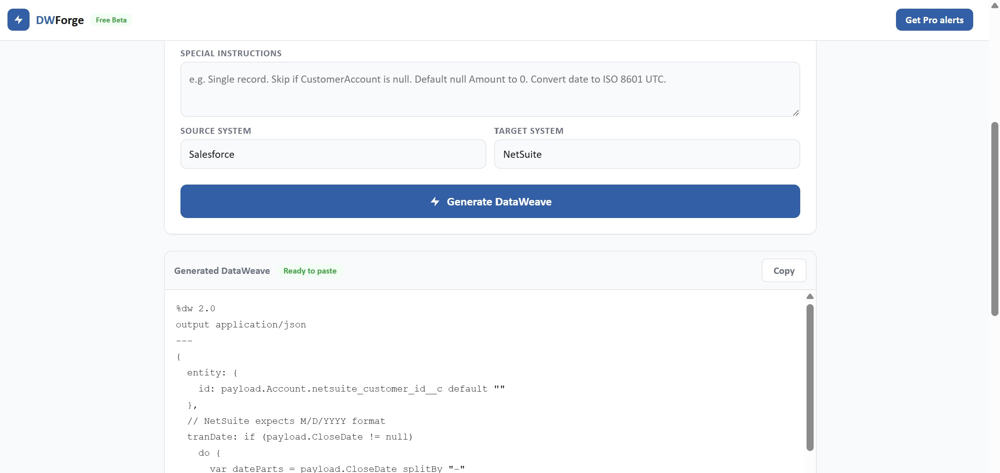
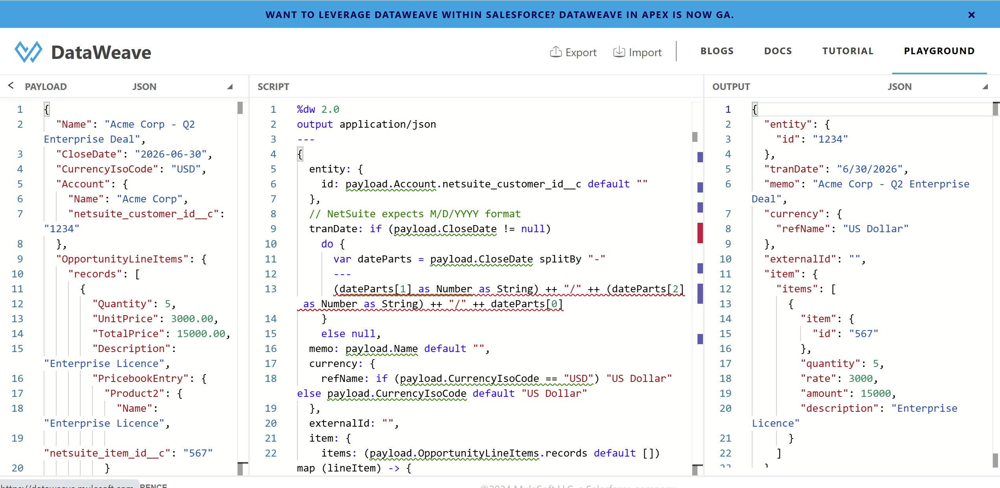

Real field mapping, null handling, date conversion, and working DataWeave code for Salesforce to NetSuite integration via MuleSoft. No theory. Just the patterns that actually work in production.
DWForge generates every transformation in this article automatically. Paste your Salesforce payload, pick NetSuite as your target, and get production-ready DataWeave in seconds. Free. No signup.
On paper, Salesforce to NetSuite looks straightforward. Opportunity becomes a SalesOrder. Account becomes a Customer. Line items become NetSuite item lines. Simple enough.
In practice, three things catch teams out every time.
First, NetSuite does not accept field values the way Salesforce sends them. Dates are in different formats, references use internal IDs instead of external keys, and amounts need to match exactly across header and line level or NetSuite rejects the whole record.
Second, NetSuite has no tolerance for nulls in reference fields. Salesforce will happily return a null AccountId on an opportunity that is not linked properly. NetSuite will throw a fault when you try to pass that null as a customer reference. Your integration needs to catch this before it hits the API, not after.
Third, the NetSuite REST API and SuiteTalk SOAP API expect different payload shapes. This guide covers the REST approach, which is what most new MuleSoft integrations use. If you are on SOAP, the DataWeave logic is the same but the output format changes.
The integration works fine in DEV with clean test data, then falls over in PROD the first time a Salesforce opportunity has a missing product line item or a null account reference. Build for the messy data from day one.
The core flow is this: a Salesforce Opportunity with its line items becomes a NetSuite SalesOrder. The Salesforce Account becomes the NetSuite Customer reference. Each OpportunityLineItem becomes a NetSuite item line.
| Salesforce | NetSuite | Notes |
|---|---|---|
| Opportunity.Name | SalesOrder.memo | Free text, maps cleanly |
| Opportunity.CloseDate | SalesOrder.tranDate | Format conversion required |
| Account.netsuite_customer_id__c | SalesOrder.entity.id | Must be NetSuite internal ID |
| Opportunity.CurrencyIsoCode | SalesOrder.currency.refName | ISO code to full currency name |
| OpportunityLineItem.Quantity | item.quantity | Maps directly |
| OpportunityLineItem.UnitPrice | item.rate | Maps directly |
| OpportunityLineItem.TotalPrice | item.amount | Verify: quantity x rate must equal amount |
| Product2.netsuite_item_id__c | item.item.id | Must be NetSuite internal ID |
Your Mule flow will typically query Salesforce for the Opportunity and its related records in one SOQL call. This is the shape of the payload arriving at your Transform Message component.
{
"Name": "Acme Corp - Q2 Enterprise Deal",
"CloseDate": "2026-06-30",
"CurrencyIsoCode": "USD",
"Account": {
"Name": "Acme Corp",
"netsuite_customer_id__c": "1234"
},
"OpportunityLineItems": {
"records": [
{
"Quantity": 5,
"UnitPrice": 3000.00,
"TotalPrice": 15000.00,
"Description": "Enterprise Licence",
"PricebookEntry": {
"Product2": {
"Name": "Enterprise Licence",
"netsuite_item_id__c": "567"
}
}
}
]
}
}Two custom fields are doing the heavy lifting: netsuite_customer_id__c on Account and netsuite_item_id__c on Product2. These need to be populated in Salesforce before this integration runs. If they are empty, validate early and route to a dead letter queue. Do not silently pass empty strings to NetSuite.
Your Salesforce payload will look different from this. Different field names, different custom fields, different nesting. Paste your actual payload into DWForge and it builds the transformation around your real data structure, not a generic example.
Using the NetSuite REST API, a SalesOrder create request looks like this.
{
"entity": { "id": "1234" },
"tranDate": "6/30/2026",
"memo": "Acme Corp - Q2 Enterprise Deal",
"currency": { "refName": "US Dollar" },
"externalId": "0065g00000AbcDEFAAZ",
"item": {
"items": [
{
"item": { "id": "567" },
"quantity": 5,
"rate": 3000.00,
"amount": 15000.00,
"description": "Enterprise Licence"
}
]
}
}The entity.id must be the NetSuite internal ID as a string, not the Salesforce AccountId. The tranDate uses MM/DD/YYYY, not ISO. And externalId stores the Salesforce Opportunity ID for idempotency.
NetSuite references work on internal IDs, not names or Salesforce IDs. The entity field needs the NetSuite internal ID of the Customer record. The item.item.id needs the NetSuite internal ID of the Item record.
The simplest approach is to store the NetSuite internal ID as a custom field on the Salesforce record. Account.netsuite_customer_id__c holds the customer ID, and you map it directly in DataWeave. This works well if you have control over the Salesforce data model and can keep those fields populated.
If netsuite_customer_id__c is null or empty, your DataWeave will produce "entity": {"id": ""} and NetSuite will reject it with a vague error. Validate before the transform. Throw an error in your flow if the ID is missing, so you get a clear failure rather than a confusing NetSuite fault.
Salesforce sends dates as ISO 8601: 2026-06-30. NetSuite REST expects MM/DD/YYYY: 6/30/2026. Use DataWeave's built-in Date type with explicit format patterns. Do not try to split the string manually.
%dw 2.0
output application/json
fun toNetSuiteDate(sfDate) =
if (sfDate != null and sfDate != "")
(sfDate as Date {format: "yyyy-MM-dd"}) as String {format: "M/d/yyyy"}
else nullNetSuite, Workday, SAP, and D365 all use different date formats. Tell DWForge your source and target systems and it handles the conversion automatically, including timezone offsets and datetime to date truncation.
NetSuite is strict. Salesforce is not. Every field in your DataWeave needs a default or a null guard. For string fields, use default "". For numeric fields, use default 0. For reference IDs, validate before the transform rather than defaulting to an empty string.
// String field with default
memo: payload.Name default "",
// Numeric field with default
quantity: (lineItem.Quantity default 0) as Number,
// Optional field - omit entirely if null rather than sending null
... (if (lineItem.Description != null) {description: lineItem.Description} else {})OpportunityLineItems.records can be null if the opportunity has no products. Always default the array before mapping it. The item reference inside each line needs the same null guard as the customer reference at the header level.
item: {
items: (payload.OpportunityLineItems.records default []) map (lineItem) -> {
item: {
id: lineItem.PricebookEntry.Product2.netsuite_item_id__c default ""
},
quantity: (lineItem.Quantity default 0) as Number,
rate: (lineItem.UnitPrice default 0) as Number,
amount: (lineItem.TotalPrice default 0) as Number,
... (if (lineItem.Description != null) {description: lineItem.Description} else {})
}
}NetSuite will sometimes recalculate the line amount from quantity x rate and ignore what you send in the amount field. If your Salesforce TotalPrice does not exactly equal Quantity x UnitPrice due to discounts or rounding, you may see discrepancies. Reconcile this in your DataWeave rather than relying on NetSuite to do it.
Here is the complete Transform Message script. Drop this into your Mule flow after the Salesforce query and before the NetSuite HTTP request.
%dw 2.0
output application/json
// Convert Salesforce ISO date to NetSuite MM/DD/YYYY format
fun toNetSuiteDate(sfDate) =
if (sfDate != null and sfDate != "")
(sfDate as Date {format: "yyyy-MM-dd"}) as String {format: "M/d/yyyy"}
else null
// Map Salesforce currency code to NetSuite currency name
fun toCurrencyName(isoCode) =
if (isoCode == "USD") "US Dollar"
else if (isoCode == "AUD") "Australian Dollar"
else if (isoCode == "GBP") "British Pound"
else if (isoCode == "EUR") "Euro"
else isoCode
---
{
// Customer reference - must be NetSuite internal ID
entity: {
id: payload.Account.netsuite_customer_id__c default ""
},
// Transaction date in NetSuite format
tranDate: toNetSuiteDate(payload.CloseDate),
// Order memo from Opportunity name
memo: payload.Name default "",
// Currency
currency: {
refName: toCurrencyName(payload.CurrencyIsoCode default "USD")
},
// Salesforce opportunity ID for idempotency
externalId: payload.Id default "",
// Line items
item: {
items: (payload.OpportunityLineItems.records default []) map (lineItem) -> {
item: {
id: lineItem.PricebookEntry.Product2.netsuite_item_id__c default ""
},
quantity: (lineItem.Quantity default 0) as Number,
rate: (lineItem.UnitPrice default 0) as Number,
amount: (lineItem.TotalPrice default 0) as Number,
... (if (lineItem.Description != null and lineItem.Description != "")
{description: lineItem.Description}
else {})
}
}
}Rather than write this by hand, we used DWForge to generate it. Paste the Salesforce payload, set source to Salesforce and target to NetSuite, and it produces the same script in seconds.

DWForge generating the Salesforce to NetSuite DataWeave. Source: Salesforce. Target: NetSuite. Output ready to paste into Anypoint Studio.
Before wiring this into your Mule flow, validate the DataWeave script in the DataWeave Playground. Paste the script, paste your Salesforce payload as the input, run it, and check the output matches what the NetSuite API expects.
Four things to confirm in the output. The tranDate is in MM/DD/YYYY format, not ISO. The entity.id contains the NetSuite customer ID from the custom field, not the Salesforce AccountId. The currency.refName is the full name like "US Dollar", not the ISO code. And item.items is an array with the correct number of lines.

The transformation validated in the DataWeave Playground. Input: Salesforce Opportunity payload. Output: NetSuite SalesOrder JSON with correct date format, entity reference, and line items.
The output above confirms all four. tranDate is 6/30/2026, entity.id is "1234" from the custom field, currency.refName is "US Dollar", and the line item maps correctly with quantity 5, rate 3000, and amount 15000.
Once the Playground output looks right, add the script to your Mule flow. Add logging before and after the Transform Message component at DEBUG level. When something goes wrong in production and it will, you need to see exactly what was sent to NetSuite.
The externalId field stores the Salesforce Opportunity ID on the NetSuite order. If the integration runs twice for the same opportunity, NetSuite rejects the second request as a duplicate rather than creating a second order. Always set this. It saves hours of deduplication work later.
Paste your Salesforce payload, pick NetSuite as your target. DWForge writes the DataWeave for your exact field structure in seconds.
Write my DataWeaveFree during beta. No signup. No credit card.